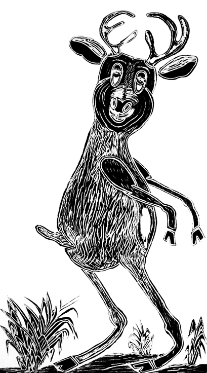
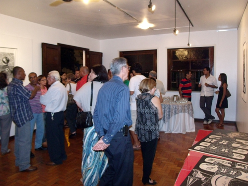
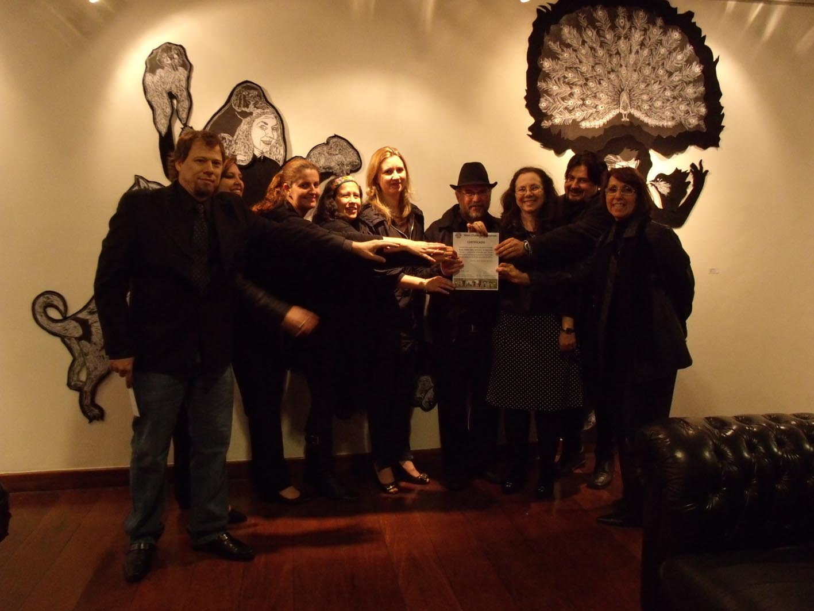

O Grupo expõe



Grupo Olho Latino no novo espaço do MAM Campinas
O Grupo Olho Latino participa da primeira exposição do novo espaço ocupado pelo Museu de Arte Moderna de Campinas (MAM) na Estação Cultura de Campinas. Do Grupo, participam os seguintes artistas: Alex Roch, Celina Carvalho, Cibele Marion Sisti, Elika Ito, Flávia Bresil Palhares, Lisa França, Maricel Fermoselli, Paulo Cheida Sans, Regiane Capp Couto Buccioli, Suely Arnaldo, Walcirlei Siqueira, Young Koh.
Vídeo que mostra a abertura de
"Fronteras Nómades II" em Cusco, Peru.


Integrantes do Grupo Olho Latino participam da mostra Fronteras Nómades - Chile, Brasil e Peru.

Grupo Olho Latino expõe "Agregados", com 27 gravuras de grandes dimensões, no Museu de Arte Moderna de Resende, RJ.
Museu Olho Latino expõe em La Paz, Bolívia: Estampida 2011 é a mostra que acontece de 07 a 19 de novembro como resultado do Intercâmbio Cultural Bolívia – Brasil, promovido pelo Museu Olho Latino e pelo Colectivo de Grabado Boliviano. O Museu está representado pelas gravuras dos artistas do Grupo Olho Latino. A curadoria é do prof. Dr. Paulo Cheida Sans
Leia Mais


O Grupo de Arte do Museu Olho Latino expõe a instalação “Almas...”, com curadoria de Paulo Cheida Sans, de 01 de setembro a 02 de outubro na Galeria do Tênis Clube de Campinas. A mostra será aberta no dia 01 de setembro, às 20h.
A mostra “Agregados” do Grupo Olho Latino inaugura dia 27 de agosto na Galeria Thomas Perina da Academia Campineira de Letras e Artes acompanhada pela palestra de Paulo Cheida Sans, no mesmo dia, às 15:30h.
5ª Bienal Nacional de Gravura - Olho Latino

Gravuras do Grupo Olho Latino: Alex Roch, Celina Carvalho, Cibele Marion Sisti, Elika Ito, Lisa França, Maricel Fermoselli, Regiane Capp Couto Buccioli, Suely Arnaldo e Walcirlei Siqueira.
Confira os novos vídeos sobre a instalação "Almas..." com Alex Roch, Celina Carvalho e Walcirlei Siqueira.
Instalação "Almas"
Xilogravura de Walcirlei Siqueira criada para a Instalação "Almas", do Grupo de Arte Olho Latino.
Olho Latino no Exterior
{swf}peru_brasil{/swf}
O grupo de arte Olho Latino expõe “Agregados de la expresión colectiva” de 29 de outubro a 06 de novembro de 2010 no Taller Kimkilen, em Lima, Peru, reunindo 20 gravuras com grandes dimensões de 12 artistas.
HistóricoA intenção do professor Paulo Cheida Sans em coordenar um núcleo de arte que fosse dinâmico nasceu no início da década de 90.
|
Indica Os artistas do Grupo Olho Latino, Celina Carvalho, Lisa França e Paulo Cheida Sans, estão participando do livro “Obra Prma”, lançado recentemente no Círculo Militar de Campinas.
|